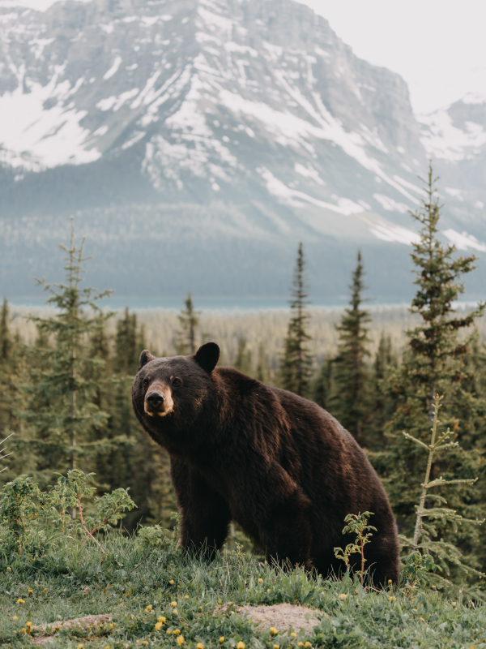

Animais Fantásticos


- 


Raposa
Raposas são pequenos a médios mamíferos onívoros pertencentes a vários gêneros da família Canidae. As raposas têm o crânio achatado, orelhas triangulares verticais, focinho pontiagudo e ligeiramente arrebitado e uma cauda longa e espessa.
As raposas vivem em todos os continentes, exceto a Antártida. De longe, a espécie mais comum e difundida de raposa é a raposa vermelha (Vulpes vulpes) com cerca de 47 subespécies reconhecidas.[2] A distribuição global das raposas, juntamente com sua ampla reputação de astúcia, contribuíram para sua proeminência na cultura popular e no folclore em muitas sociedades ao redor do mundo.
A caça à raposa com matilhas de cães, há muito uma atividade estabelecida na Europa, especialmente nas Ilhas Britânicas, foi exportada por colonos europeus para várias partes do Novo Mundo.
Esquilo
Os esquilos pertencem a uma grande família de mamíferos roedores, de pequeno e médio porte, conhecida como Sciuridae. No Brasil, são também conhecidos como serelepe, caxinguelê, caxinxe[1], quatimirim[2], quatipuru[2], agutipuru[3] ou acutipuru[4].
"Esquilo" é uma palavra com origem no termo grego skioúros[6]. "Caxinguelê" é oriundo do termo quimbundo kaxinjiang'elê, que significa "rato de palmeira"[1]. "Quatimirim" origina-se do termo tupi kwa'ti mi'rim, que significa "quati pequeno"[2].
As sementes são as principais fontes de alimentação, mas também consomem insetos e frutas. Quando coletam alimento, enterram algumas sementes que encontram, sendo que algumas chegam a germinar, como pinhões e coquinhos, acabando por plantar árvores como araucária e jerivá.
Urso
Os Ursos (latim científico: Ursidae) constituem uma família de mamíferos plantígrados, da ordem Carnivora, geralmente de grande porte, contendo os ursos e os pandas. Embora classificado como urso, e logo após, como procionídeo, junto com o panda-vermelho (atualmente classificado em sua própria família, Ailuridae), o panda-gigante foi recolocado dentro da família dos ursídeos devido às novas pesquisas genéticas
As espécies mais antigas e primitivas desta família estão reunidas no gênero Ballusia, do Mioceno Inferior, que ainda retêm características similares aos Hemicyonidae. Do Ballusia descende o gênero Ursavus, fonte dos ursíneos, e talvez o Agriarctos, ancestral dos agrioteríneos.
Os ursos existem em todos os continentes, em exceção na África, embora algumas fontes afirmem terem avistado o Urso nandi, mas sem comprovarem a sua existência.
Lobo
O lobo é uma espécie de mamífero canídeo do gênero Canis, da família dos cães e raposas. É um sobrevivente da Era do Gelo, originário do Pleistoceno Superior, cerca de 300 mil anos atrás. Está dividido em 4 espécies: lobo-cinzento (Canis lupus), lobo-dourado (Canis anthus), lobo-vermelho (Canis rufus) e lobo-etíope (Canis simensis),[2] embora os cientistas atualmente debatam se o lobo-etíope seria um verdadeiro lobo ou um membro da família dos chacais-dourados.
Dessas espécies, o lobo-cinzento é a maior delas e também de todos os membros remanescentes selvagens da família canidae.[3] O sequenciamento de DNA e estudos genéticos reafirmam que o lobo-cinzento é ancestral do cão doméstico (Canis lupus familiaris), contudo alguns aspectos desta afirmação têm sido questionados recentemente.
Embora não sejam tão adaptáveis à presença humana como geralmente ocorre com as demais espécies de canídeos,[4] os lobos se desenvolveram em diversos ambientes, como florestas temperadas, desertos, montanhas, tundras, taigas, campos e até mesmo em algumas áreas urbanas.
Macaco
Babuíno (do francês babouin) é a designação genérica para antropoides cercopitecídeos do gênero Papio e afins, caracterizados pelo focinho pontudo, caninos grandes, bochechas volumosas e calosidades nas nádegas.
É um animal semi-quadrúpede da ordem dos primatas que mede até 120 centímetros de comprimento. Vive na África e seu habitat natural é nos campos abertos (savana, pastagens ou terrenos rochosos).
Ao contrário dos macacos, os babuínos passam a maior parte do tempo no chão. Suas caudas não são preênseis. Os babuínos são grandes lutadores e demonstram pouco medo de outros animais, inclusive seres humanos. Todos têm hierarquias fortes e complexas dentro dos grupos familiares.
Leão
O leão[3] [feminino: leoa] (nome científico: Panthera leo) é uma espécie de mamífero carnívoro do gênero Panthera e da família Felidae. A espécie é atualmente encontrada na África subsaariana e na Ásia, com uma única população remanescente em perigo, no Parque Nacional da Floresta de Gir, Gujarat, Índia.
Foi extinto na África do Norte e no Sudoeste Asiático em tempos históricos, e até o Pleistoceno Superior, há cerca de 10 000 anos, era o mais difundido grande mamífero terrestre depois dos humanos, sendo encontrado na maior parte da África, em muito da Eurásia, da Europa Ocidental à Índia, e na América, do Yukon ao México.
A pelagem é unicolor de coloração castanha, e os machos apresentam uma juba característica. Uma das características mais marcantes da espécie é a presença de um tufo de pelos pretos na cauda, que também possui uma espora.